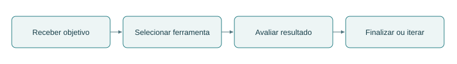

Termo em inglês: Agentic workflow
Definição: Fluxo que delega ao agente parte da escolha de ações e ferramentas em função de um objetivo.
Como funciona
O agente observa resultados, escolhe a próxima ferramenta dentre as permitidas e pode iterar; limites de tempo, custo, passos e autorização são externos ao modelo.

Exemplo aplicado
DARCY consulta agenda e disponibilidade, adapta consultas e propõe uma reunião.
Quando utilizar e limites
Vantagens: Flexibilidade em tarefas de percurso incerto.
Desvantagens: Menor previsibilidade; risco de loops, escolhas incorretas e gastos.
Quando utilizar: Tarefas que exigem adaptação a resultados intermediários.
Quando não utilizar: Processos regulados por regras fixas ou operações críticas sem controle externo.
Implementação e experimentação
n8n: AI Agent + Chat Model + Call n8n Workflow Tool; limitar iterações.
Atividade: desenhe o contrato de entrada e saída do exemplo, implemente com dados fictícios e teste sucesso, entrada inválida e falha externa. Registre resultado, custo e necessidade de intervenção.
Laboratórios n8n · Comparar tipos · Tool · Skill · Guardrails
Referências para aprofundamento: Anthropic — Building effective agents · n8n — Advanced AI · LangGraph — Workflows and agents. Taxonomia didática do Agente.IA; não constitui classificação normativa universal.